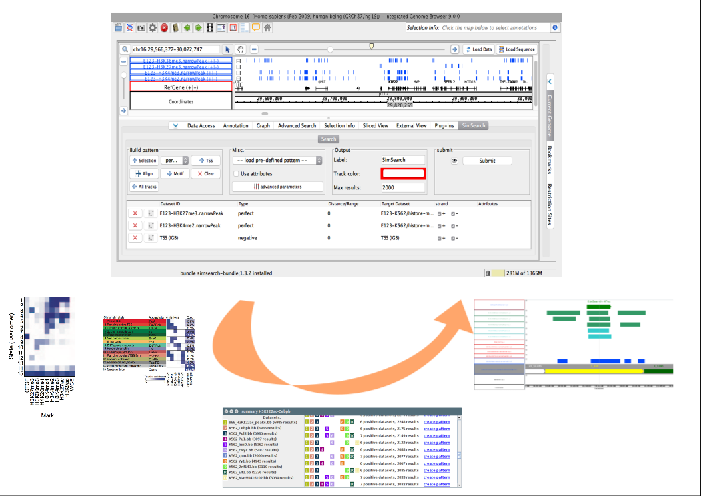

SimSearch APP¶
{kind=link}
SimSearch is a pattern-search algorithm that provides biologists with the ability, once they identify an interesting genomic pattern, to look for similar occurrences in the data, thus facilitating genomic data access and use.
For example, such patterns can describe gene expression regulatory DNA areas including heterogeneous (epi)genomic features (e.g. histone modification and/or different transcription factor binding regions).
It is possible to define complex patterns based on perfect matching in genome tracks (regions that must match), partial matching (regions that are allowed to be absent), and negative matchings (for instance to search for regions distant from transcription start sites).
Video¶
Have a look at https://www.youtube.com/watch?v=jW65ope1h1o to see the SimSearch plugin in action:
Acknowlegments:¶
The SimSearch algorithm has been developed as a collaboration between University of Bologna and the Politecnico di Milano.
The SimSearch App for IGB, based on the **SimSearch algorithm*, has been developped by Arnaud Ceol for the Istituto Italiano di Tecnologia.
SimSearch is part of the DATA-DRIVEN GENOMIC COMPUTING(GeCo) project.
Support¶
- Issue Tracker: https://github.com/DEIB-GECO/simsearch-app/issues
- Source Code: ttps://github.com/DEIB-GECO/simsearch-app
License¶
The SimSearch IGB App and its documentation are freely available for non-commercial use.